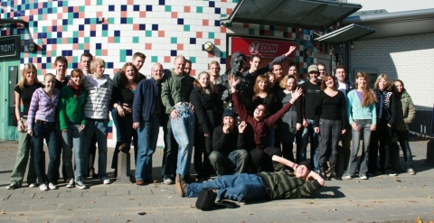

Jongeren Algemene Vergadering
De Jongeren Algemene Vergadering is een weekend waarin baptisten jongeren samenkomen in een baptistengemeente. Elk jaar is er een andere gastgemeente. Je logeert in gastgezinnen en wordt het hele weekend voorzien van eten en drinken. Tijdens dit weekend wordt er gesproken over de toekomst van jeugdwerk binnen je gemeente. De ontmoeting met jongeren uit andere baptistengemeenten staat ook centraal: er wordt samen gezongen, gesproken én gevolleybald.
Dus ben jij een jongere met een mening en/of vind je het gezellig om andere jongeren te ontmoeten? Dan is de JAV echt iets voor jou!
